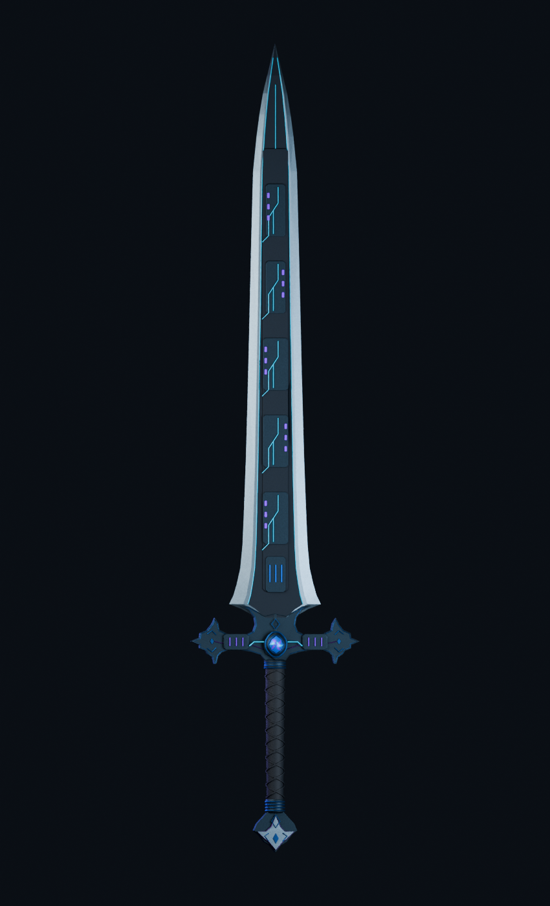
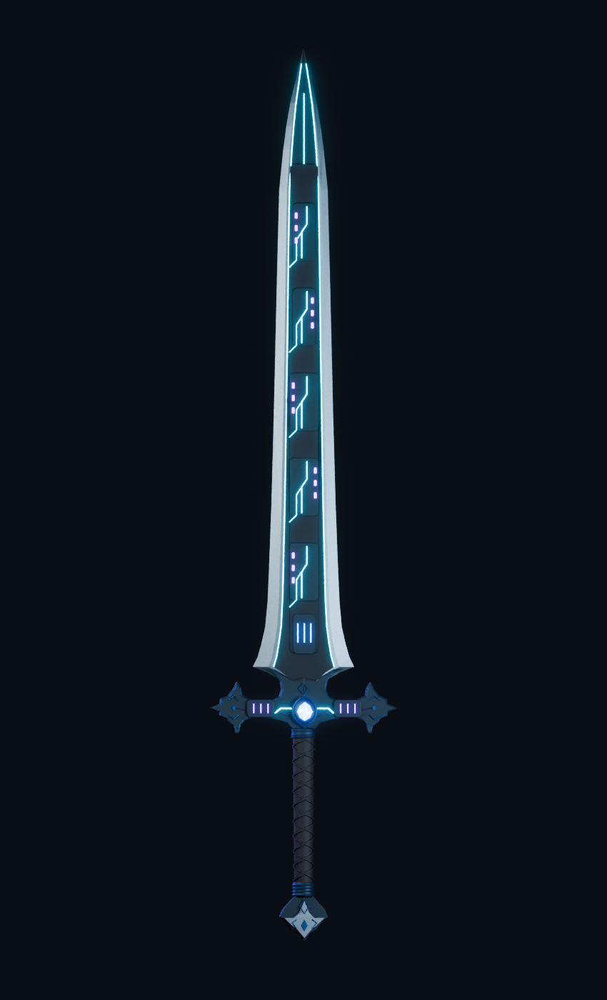
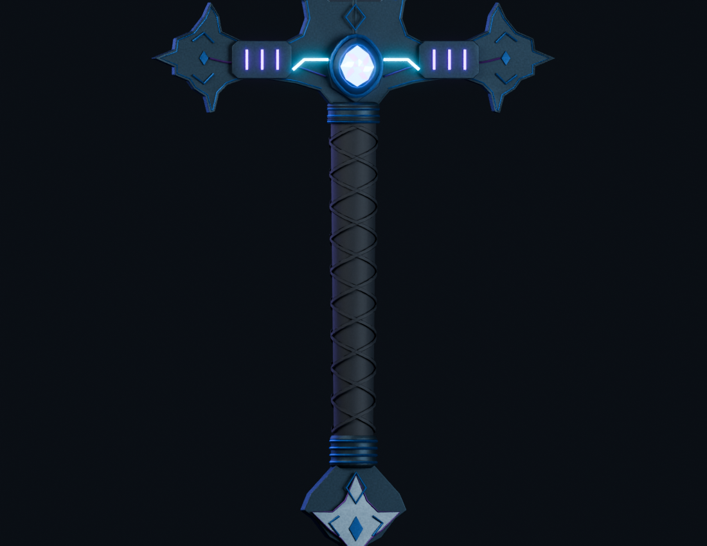
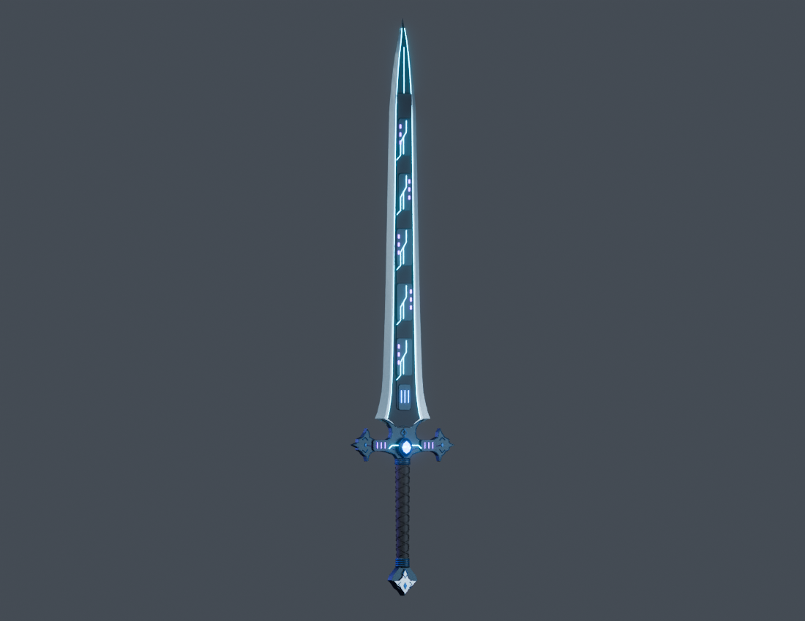

Dark alloy. Cyan power rails. Violet charge cells.
Blender art and game assets prepared. Shared integration and a game build await Archer's clearance. These are Blender renders of the exported geometry and textures; native appearance is not yet tested.




Editable Blender master · Integration and checks · Staged integration patch